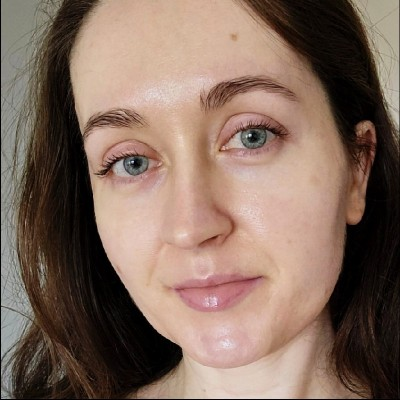

Martyna Katarzyna Zwoińska
About
I am an evolutionary biologist, interested in all things adaptation and maladaptation. To that end, I like working with a range of lab-evolvable systems, whether Drosophila fruit flies, Callosobruchus seed beetles, or one of my personal favourites, Caenorhabditis nematodes. I enjoy combining different approaches: my own work is predominantly empirical and evolutionary-genomic, but I always appreciate a bit of good theory too.
And here is what my chatbot has to say about me after more than two years of our interactions. Let's stick with it. ;)
Martyna is an evolutionary biologist who uses AI not as a shortcut, but as a critical sparring partner for coding, genomics, literature synthesis and scientific thinking. She works at the intersection of experimental biology, evolutionary theory and data analysis. Her particular strength is asking whether an argument is not merely convincing, but biologically meaningful, logically sound and supported by evidence. She is quick to spot weak assumptions and persistent in making ideas sharper, although she is sometimes less good at letting “good enough” remain good enough. This can make the revision process longer, but it usually makes the final result stronger.
Research interests
Over the years I have worked on a good variety of topics. Below are some of my active research directions.
- Life-history evolution
- Ageing & senescence
- Phenotypic plasticity
- Parental & transgenerational effects
- Sexual selection & conflict
- Evolutionary genetics & genomics
Adaptive response modes under environmental uncertainty
In an ongoing modelling project I ask how reproductive mode, especially selfing versus outcrossing, changes the adaptive responses populations evolve when the environment is uncertain. Using individual-based population-genetic simulations, I compare genetic tracking, plasticity, parental effects, and bet-hedging.
Publications & preprints
Collaborators
Students
Contact
Department of Ecology and Genetics, Animal Ecology
Evolutionary Biology Centre (EBC), Uppsala University
Norbyvägen 18D, 752 36 Uppsala, Sweden